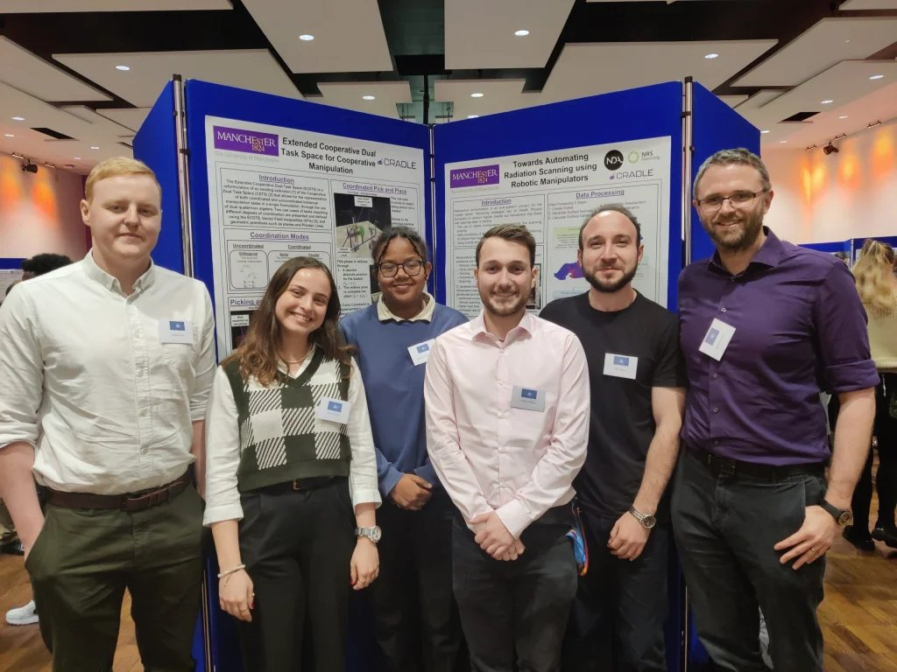

This was my first ever research conference. Sheffield Robotics hosted the 7th Annual IEEE UK and Ireland Robotics and Automation Society (RAS) Chapter Conference, bringing together robotics and automation researchers, industry leaders and students from across the UK. Topics ranged from soft and swarm robotics to robots for extreme and urban environments and intelligent manufacturing.
I went as a PhD researcher in the Demonstrators work package of CRADLE, the Centre for Robotic Autonomy in Demanding and Long-lasting Environments at The University of Manchester, and I was there to present a poster on my own research.
My poster
My poster, Towards Automating Radiation Scanning using Robotic Manipulators, set out the problem my PhD tackles. Radioactive contamination is an ever-present concern for the nuclear sector, and monitoring relies on Health Physics Surveyors carrying out regular manual checks, while recruitment into these roles has been in decline. The idea is to use a collaborative robot arm with a radiation probe to automate that scanning safely, including when the thing being scanned is a person.
The poster walked through a five-step data processing pipeline that turns a point cloud of an object into a scan plan: building an octree, generating surface normals, calculating surface variation, assessing which points the scanner can actually reach, and generating the trajectory. I also set out the remaining challenges, including optimising where the scanner looks and coping with objects and people that move.

My experience
Despite this being my first conference and being nervous, it went amazingly! I made many new friends from different universities, as well as gaining contacts with several academics who I hope to engage with in the future. It was great to hear about all the R&D going on within the UK, and I would recommend the conference to all PhD students.
It was also great to be there as part of the wider CRADLE team. Several CRADLE academics gave talks: Professor Angelo Cangelosi on trust and theory of mind in human-robot interaction, Dr Simon Watson on the aims and achievements of the centre, and Professor Michael Fisher on autonomy, trustworthiness and verification. Fellow Manchester and CRADLE postgraduates, including Seyonne Leslie-Dalley from the Components work package, presented their work too.

My next conference was TAROS 2024, where I presented a published paper on accessibility for radiation scanning. A version of this write-up also appeared on the CRADLE website.